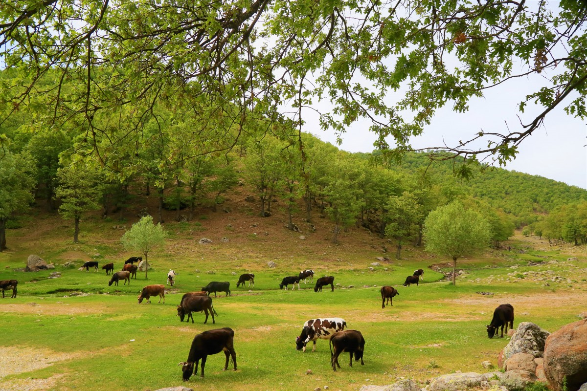

Los campos
Los campos son ecosistemas abiertos que se caracterizan por su vegetación baja y suelos fértiles. Son el hogar de una amplia variedad de especies, desde pequeños insectos hasta grandes mamíferos como los ciervos.
En los campos, las estaciones del año juegan un papel crucial. Durante la primavera, las flores silvestres florecen, atrayendo polinizadores como abejas y mariposas. En el invierno, muchas especies migran o hibernan para sobrevivir al frío.
Subtitulo
Los campos también son importantes para la agricultura, proporcionando alimentos y recursos esenciales para las comunidades humanas. Sin embargo, la expansión urbana y la agricultura intensiva están poniendo en peligro estos ecosistemas.
Es fundamental promover prácticas agrícolas sostenibles y proteger las áreas naturales para garantizar que los campos sigan siendo un refugio para la biodiversidad y una fuente de recursos para las personas.